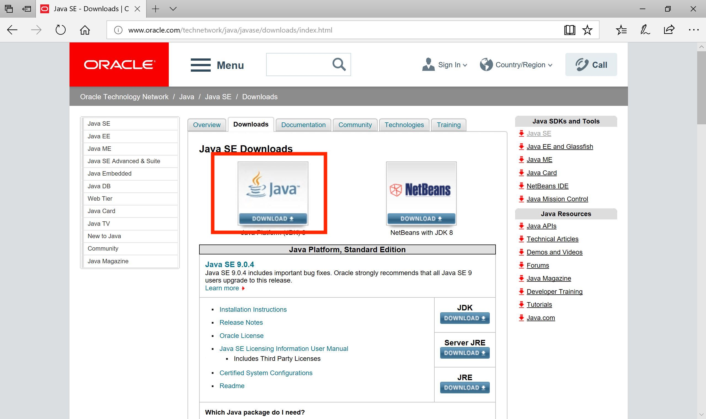
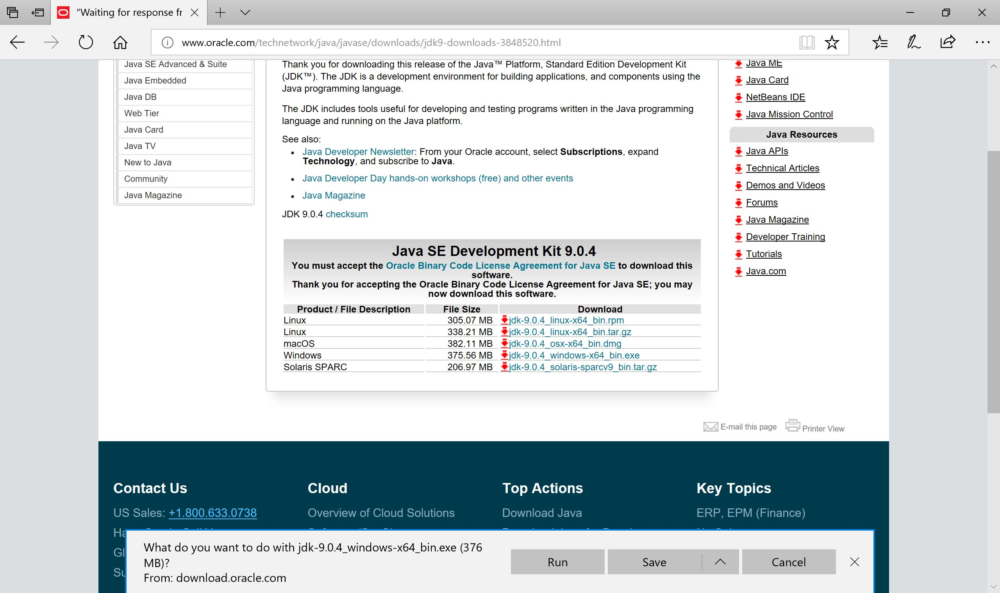
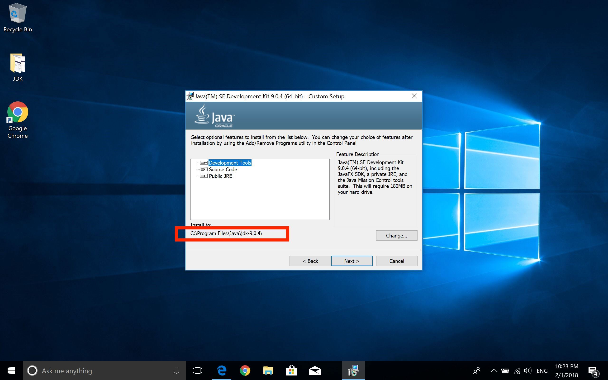
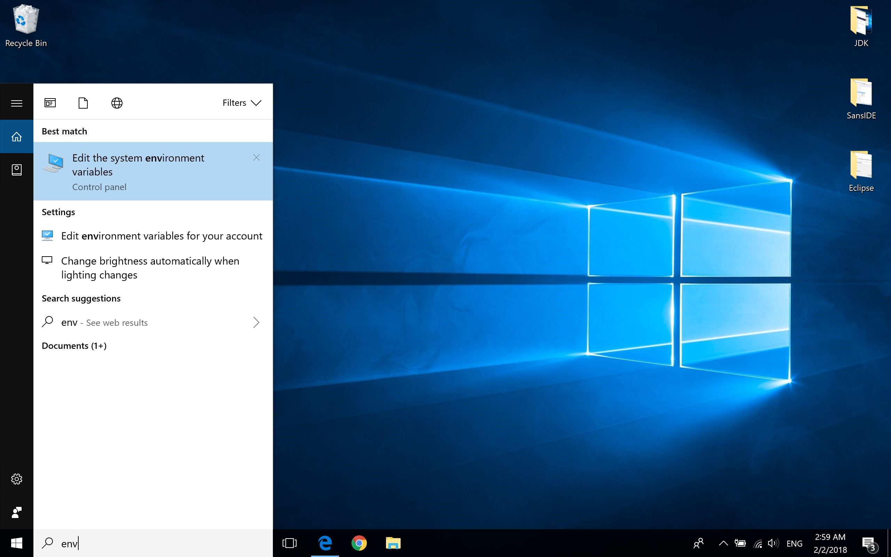
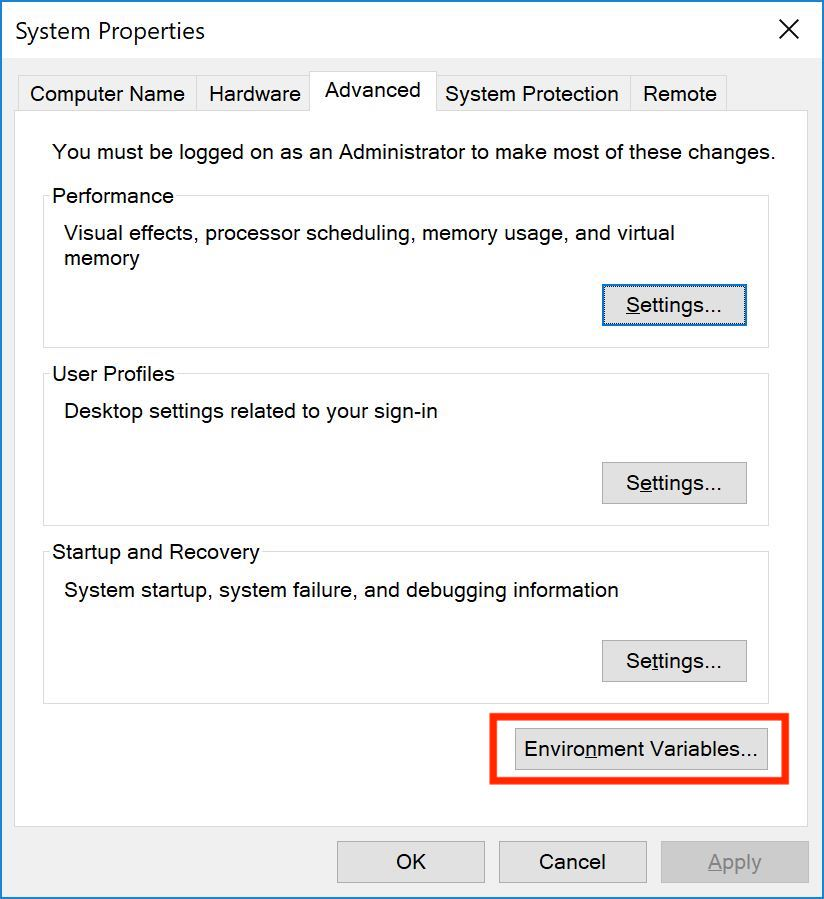
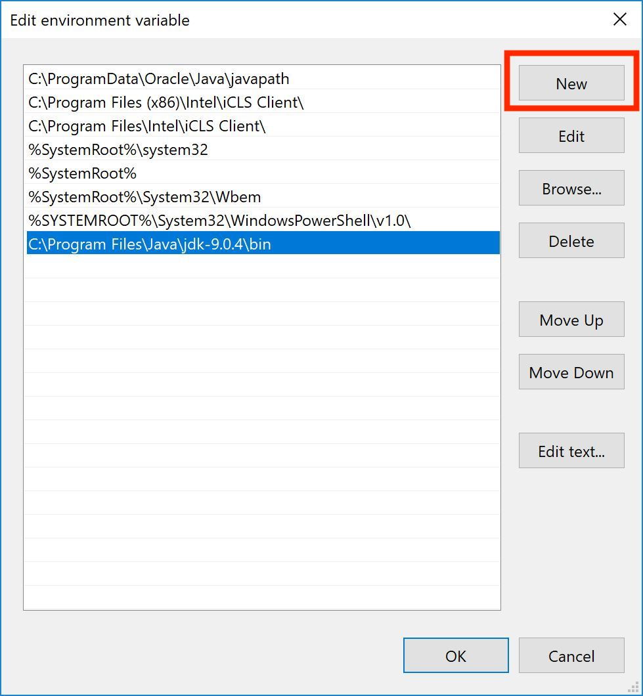
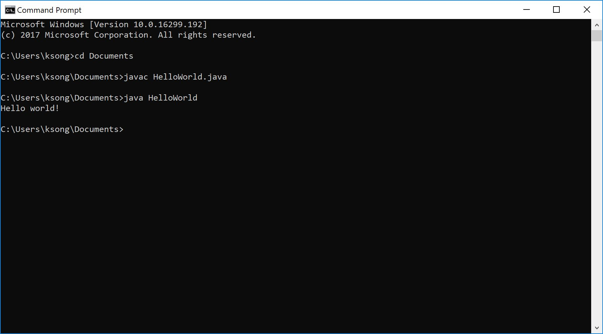
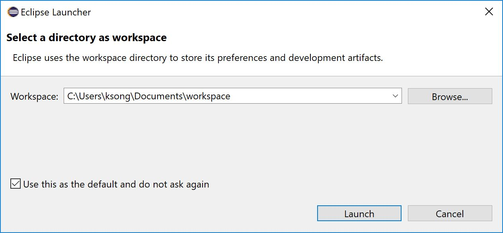

Installing the Java Development Kit
To compile and run Java programs, you must have the Java Development Kit (JDK).
| 1 | Head to Oracle's Website: Link. Click on the Download button for JDK 9.  |
| 2 | Click on the circle to Accept License Agreement and select the appropriate Download for your system.  |
| 3 | Once the download is complete, run the installer. If you plan on using Java without an IDE (via command line/Terminal), remember the installation path. If you plan on using Java with Eclipse, ignore this step.  |
| 4 | Complete the installation. |
Compiling without an IDE (on Windows)
This procedure is not required to run a Java program. It is recommended for those who wish to know the bare bones of Java, learn how to use the command line, and/or have a computer that struggles to run Eclipse.
The JDK must be installed before proceeding. Steps 1-4 need to be done ONLY ONCE.
| 1 |
After creating a .java file using a text editor of your choice (Notepad/Notepad++/Sublime//etc...), click on the search bar and type in "env" to search for "Edit the system environment variables" (if it does not show up, try typing in "environment").  |
| 2 |
Click on the button labeled "Environment Variables..."  |
| 3 |
Under System variables, click on "Path" to highlight it and click the Edit button. 
|
| 4 |
Click on the "New" button and enter the JDK path mentioned in step 3 of the previous table, followed by inserting a "\bin" at the end. Note that your JDK version may not match mine. Click OK once you're done.  |
| 5 |
To access the command line, type in "cmd" in the search bar. Use the "cd" command to move to the folder that contains your Java file. The "javac" command compiles your code into bytecode class files. The "java" command runs the class files.  |
Compiling without an IDE (on Mac)
Open Terminal. You can directly open a UNIX text editor of your choice (such as vi, pico, emacs, ... ) or use the "cd" command to move to the folder that contains your Java file. The "javac" command compiles your code into bytecode class files. The "java" command runs the class files.
Working with Eclipse
Download Eclipse here. Click on Eclipse IDE for Java Developers, and select the appropriate version for your computer.
| Instructions | |
|---|---|
| 1 |
Select a location to place your Eclipse projects.  |
| 2 |
Steps 2-7 can be followed with the video above. Close the Welcome window. |
| 3 |
To create a new Java project:
|
| 4 |
To create a package:
|
| 5 |
To create a Java file:
|
| 6 |
To run a Java file:
|
| 7 |
When submitting your files, use the Export feature:
|